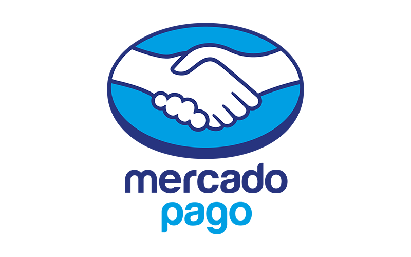

Experience

Mercado Pago
FINTECH SR. PRODUCT MANAGER
Fecha: Mar 2022 - Nov 2023
Ubicación: Ciudad Autónoma de Buenos Aires, Argentina
Developing and executing a digital product roadmap, collaborating with key stakeholders to define long-term objectives and features, and create a strategy.
Defining and prioritizing the product backlog according to customer feedback.
Coordinating with up to 20 cross-functional IT and UX professionals to ensure timely delivery of sprint deliverables, aligning with the user experience strategy and work requirements.
Leading the product-release plans and set expectations for delivery of new functionalities and mitigate roadblocks
Ensuring the presence of robust analytics, tracking, and data collection systems, analyzing results to build dashboards, and making data-driven decisions.

Banco Galicia
PRODUCT OWNER - INVESTMENTS
Fecha: Apr 2019 - Mar 2022
Ubicación: Ciudad Autónoma de Buenos Aires, Argentina
Managing the backlog. Creating and maintaining dashboards to monitor KPIs and NPS.
Coordinating initiatives with UX, IT, marketing, and research
Boosting market share from 1.4% to 23%, propelling us to second place among custodian banks
Implementing robust risk management protocols, ensuring compliance with regulatory requirements
Playing a pivotal role in the development of the annual investment strategy, aligning it with the bank's long-term goals, and achieving a 10% increase in assets under custody (AUC)
Banco Galicia
SR ACCOUNT EXECUTIVE - INVESTMENT BANKING
Fecha: Oct 2017 - Apr 2010
Ubicación: Ciudad Autónoma de Buenos Aires, Argentina
Advising key clients on strategic investment decisions, providing tailored financial guidance to optimize their portfolios and align with their financial goals.
Conducting credit analysis for Delivery Versus Payment, Intraday, Overnight, and Visa Business.
Analyzing, responding, and following up on Anti-Money Laundering (AML) alerts.
If you'd like to explore my complete professional journey, I invite you to visit my LinkedIn profile.
Visit LinkedIn Profile